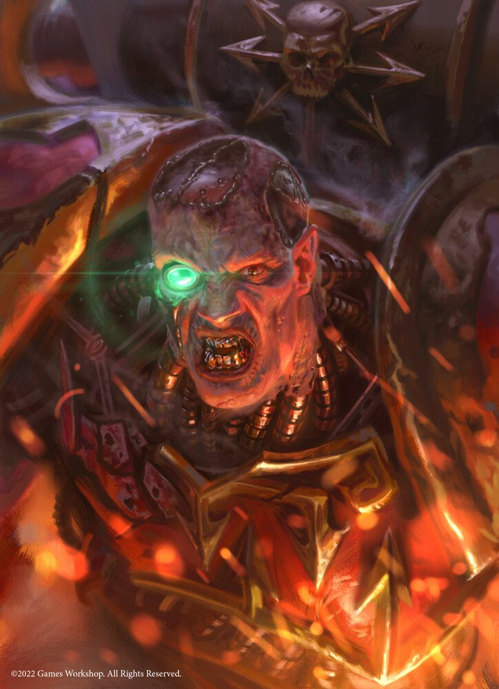
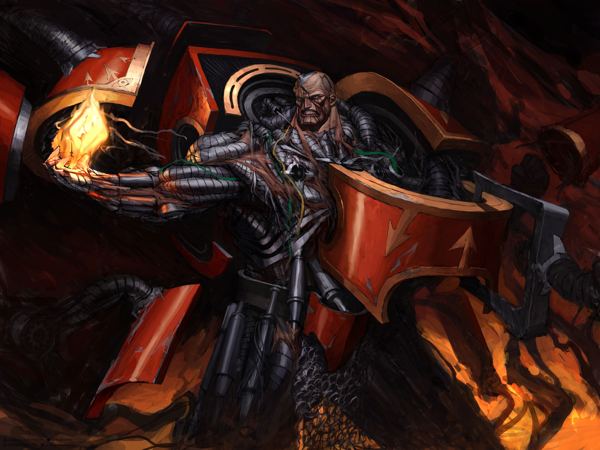
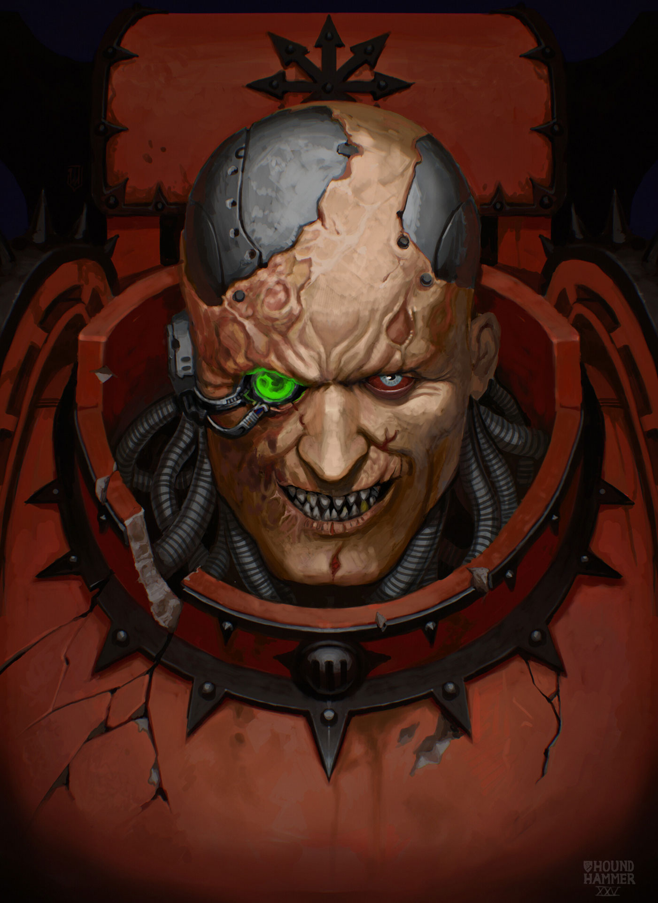

HURON BLACKHEART
O Mestre dos Red Corsairs • Tirano de Badab • Lorde dos Piratas

Origem
Antes de ser conhecido como o Mestre dos Red Corsairs, Lufgt Huron era o honrado e implacável Mestre do Capítulo dos Astral Claws, encarregado de proteger a instável região espacial conhecida como o Redemoinho (The Maelstrom).
Sentindo-se subestimado e carente de recursos pelo Administratum Imperial, Huron tomou o controle direto da região, parou de pagar os dízimos genéticos e planetários para a Sagrada Terra, e se declarou o Tirano de Badab. Isso resultou na infame Guerra de Badab, onde seu exército rebelde enfrentou múltiplos Capítulos de Space Marines leais. Na batalha climática pela sua fortaleza, Huron foi meio derretido pelo disparo de um melta, tendo metade do seu corpo obliterado.
No entanto, o ódio o impediu de morrer. Arrastado por seus seguidores leais de volta para as profundezas do Redemoinho, Huron fez um pacto sombrio com os Deuses do Caos. Renascido com bionismos grotescos alimentados por magia demoníaca, ele emergiu como Huron Blackheart. Ele unificou os traidores e mercenários da região sob a bandeira negra dos Red Corsairs, tornando-se uma das ameaças mais letais da galáxia, rivalizando apenas com o próprio Abaddon, o Despoiler.

Credo de Guerra
"O Império de Vocês construiu as correntes. Eu construí a lâmina para cortá-las. Os fracos morrem e os fortes sobrevivem — essa é a única lei que o Maelstrom respeita."
Diferente das Legiões Traidoras originais que odeiam o Império por conta da Heresia de Horus, os Red Corsairs são piratas pragmáticos e oportunistas modernos. Huron não segue cegamente nenhum Deus do Caos específico, usando a adoração sombria apenas como uma ferramenta para acumular poder, recursos e novas naves de guerra.
Seu Credo de Guerra gira em torno de ataques relâmpago implacáveis de pirataria. Sua frota ataca comboios comerciais do Administratum e mundos-forja fracamente defendidos. Seus corsários saqueiam sementes genéticas (gene-seed) e equipamentos para aumentar continuamente suas forças.
Qualquer herege, mutante ou guerreiro traidor pode encontrar refúgio nos Red Corsairs, desde que jurem lealdade inabalável e sangrenta a Huron. Esse ecletismo fez de seu exército uma força brutal, rápida, e imprevisível, espalhando terror pelas rotas de navegação do Imperium Nihilus.
Capacidade Bélica
- A Garra do Tirano (Tyrant's Claw): Um gigantesco punho de energia e braço biônico amaldiçoado, infundido com magias da Disformidade, que abriga em sua palma um devastador Lança-chamas Pesado (Heavy Flamer).
- Machado de Batalha: Brandindo um machado modificado de poder caótico, Huron destroça guerreiros espaciais lealistas sem nenhum remorso.
- O Hamadrya: Uma pequena e perturbadora criatura demoníaca, parecida com um símio espectral, que fica em seu ombro. Ela fornece visões psíquicas do futuro e defende Huron de magias e disparos surpresa.
- Corpo Meio-Máquina: Metade de seu corpo foi aniquilada e substituída por tecnologia e enxertos arcanos; o que ele perdeu em agilidade natural, ganhou em pura resiliência demoníaca.
- Poder Naval Incomparável: Ele não é apenas um guerreiro de infantaria; Huron possui uma das maiores frotas piratas do universo, capaz de obliterar defesas orbitais em minutos.
Localização Atual: Operando a partir do interior do Maelstrom e pilhando o Imperium Nihilus.
Status: Ativo - Roubando frotas inteiras, acumulando Astartes Traidores e causando terror em escalas que perturbam até os Inquisidores mais insensíveis.
